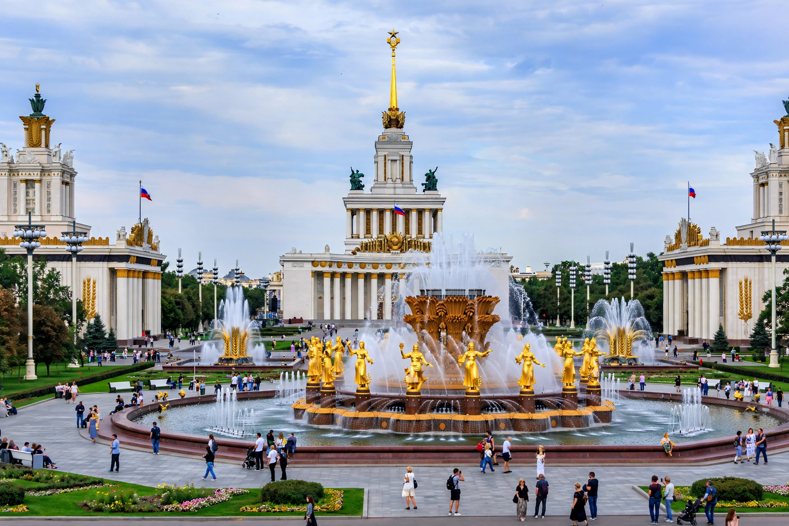

Location: Moscow, Russia
Opened: 1939 (as All-Union Agricultural Exhibition)
Former name: VDNKh — Exhibition of Achievements of National Economy
The All-Russia Exhibition Centre, universally known as VDNKh, is a permanent general-purpose trade show and amusement park in the Ostankinsky District of Moscow. It is one of the largest exhibition and recreation spaces in the world, famed for its monumental Soviet pavilions, fountains and sculpture.
Opened in 1939 as the All-Union Agricultural Exhibition, it was rebuilt after the Second World War and reopened in 1954 as a showcase of the economic, scientific and cultural achievements of the Soviet republics, each with its own pavilion. In 1959 it became the Exhibition of Achievements of National Economy (VDNKh). Famous features include the Friendship of Nations and Stone Flower fountains, the Worker and Kolkhoz Woman statue by Vera Mukhina nearby, and the Cosmos pavilion displaying Soviet space achievements.
Renamed the All-Russia Exhibition Centre in 1992, the grounds fell into commercial use as a market in the 1990s before a major restoration in the 2010s restored pavilions, returned the historic VDNKh name, and merged the grounds with the Botanical Garden and Ostankino Park.